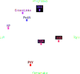
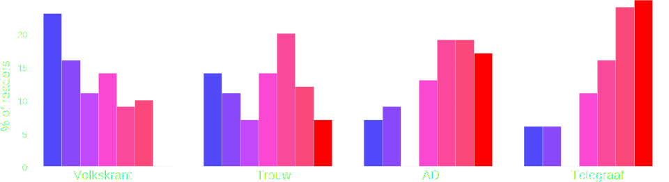
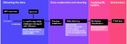
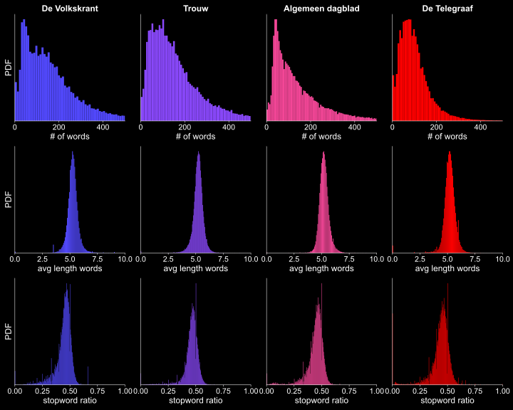

Investigating language use in Dutch newspapers
This project was started as the final project for an after work data science course I took from
allWomen academy (
course content),
a cool company from Barcelona which wants to bring more female talent to tech industry.
The final project took 6 weeks after which the first version of the project was finished which is presented at this page. After the course I extended the project
where I focused more on the data visualization which documentation can be found here.
Motivation
In the Netherlands newspapers have political affilations. When the voting behavior in 2015 of the readers of
four major newspapers in the Netherlands is considered this is clearly shown [
1,
2].


Research has also shown that more than 50% of the Dutch people think that traditional media such as newspapers are polarizing
[3].
So there is consensus that there are differences between newspapers however little research has been done in looking in detail at these actual differences
[4]. I found this interesting and therefore focused on the language use in four major Dutch newspapers.
Since the polarising society seem to be a current topic I also wanted to see if I could find how differences changed historically.
Data source
Delpher is a website from the Dutch Royal Library which contains millions of digitized newspapers.
You can spend hours at this website browsing through newspapers from as early as 1610(!) up to 2005, looking up historical events or checking the
front page of the day you were born. Through the Dutch Royal Library I got access to their historical newspaper collection such that I could get the metadata of all their newspapers.
Since their collection is enormous I decided to focus on 4 major Dutch newspapers;
de Volkskrant,
Trouw,
Algemeen Dagblad, en
de Telegraaf which on a political/public axis would be classified the following:
For a time period I focused on 1950 to 1995. From 1950 all chosen newspapers published with their current title, 1995 was the limit up to where data could be obtained
from the Delpher/Dutch Royal Library database. Since the time available for the project was 6 weeks the amount of data was reduced by only focusing on articles on the front page.
Approach

To understand the differences in language use I decided to build a multi-class classification model which could predict the newspaper title from the article text.
The hypothesis was that if the model will produce good metrics it would mean that there are differences in the language use which can then be further studied.
To get historical trends I would run the model for each year and look at differences over time.
Obtaining the data
With a search API issue IDs from the historical newspaper collection were otained where each newspaper title (de Volkskrant, het Algemeen Dagblad,Trouw, de Telegraaf)
was identified with a set ID. Each issue, for example
de Volkskrant from 21st of July 1969, has metadata on issue,page and article level stored in XML format. For each level the following metadata was obtained:
| Issue |
Page |
Article |
| issue id |
record id |
article type |
| newspaper title |
page number |
article title |
| publication date |
OCR confidence level of page |
OCR text of article |
| city of publication |
url to page |
url to article |
| copyright |
|
|
Even though in the project I was only looking at the frontpage of the newspapers I wanted to keep the option open to look get other
pages in a later stage. Therefore I created a relational database with postgreSQL which was managed with DBeaver with the following layout:
The database was queried in Python to store the data in a pandas dataframe to be further processed.
Data exploration and data cleaning
The number of frontpages per newspaper is quite constant over the years with the exeption of 1950 and 1995.
The main data source was the text of articles on the front page obtained with OCR by the Dutch Royal Library. The quality of the OCR was sometimes not good
because it was for example close to the edge of a frontpage. Therefore the first task was to clean the data and remove articles for which the quality was not sufficient.
The quality was defined by dividing the total number of valid dutch words and names by the total number of words in an article. If this parameter was below .. the
article was discarded. The data was further cleaned by taking out main Dutch stopwords as well as newspaper specific stopwords such as 'page' and 'from our editor'.
Next numerical features which could be derived from the text were determined. It was thought that if there were large differences between newspapers
for the numerical features they could be used to classify the newspapers. The following numerical parameters are shown here:
# of words = number of words per article
avg len words = the average length of words in an article
stopword ratio = the number of stopwords/total number of words in an article

Modeling and results
Flask app
After the machine learning models were deployed another question arised;
How can the results be made more intuitive and useful
for a reader to inform themselves about biases in different newspapers?
The answer to this question was a
Flask app (in Dutch) where people can look for a word (for example a Dutch political party) and find out the following:
- How many times does a newspapers mentione the chosen word on their frontpage over time?
- In which year was the mentioned most times? And which events related to the chosen word occured (found by scraping wikipedia)?
- How well are the newspaper articles with this word classified?
- Which words were most determinative for the classification?
Further steps
What I have learned
This was my first machine learning project which I did from start to end so this was a whole learning experience by itself. Also documenting the project
and creating a portfolio with html/css and deploying an app with heroku is something I have learned. Finally, I learned that visualizing the results in an intuitive and useful way requires a lot of
thinking before actually creating the plots.
Sources
[1] https://nl.wikipedia.org/wiki/Politiek_spectrum
[2] https://www.ad.nl/binnenland/wat-stemmen-krantenlezers~a655e176/
[3] https://www.scp.nl/publicaties/monitors/2019/03/29/burgerperspectieven-2019-1
[4] https://www.denieuwereporter.nl/2017/09/hoe-populaire-en-kwaliteitskranten-van-elkaar-verschillen-in-verslaggeving/
Back home